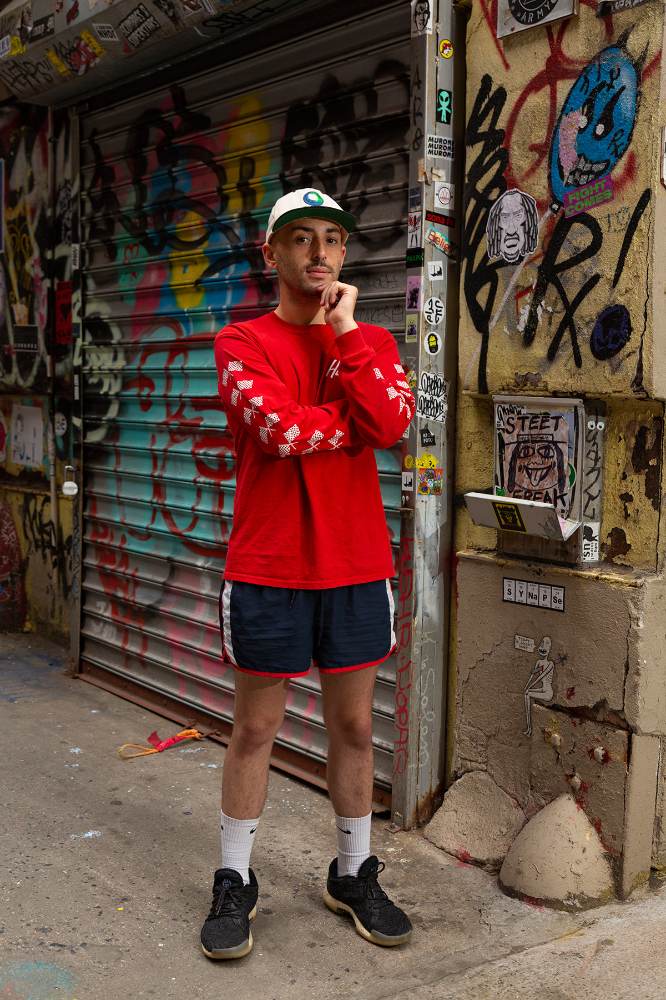

Approaching the new album Basking in the Glow by Oso Oso I didn’t have any expectations of quality or even an idea of what to expect sonically. Little did I know I was in for an spacey upbeat emo cut album. Expressing love, isolation, and self-consciousness.With foreshadowing of the romantic crash landing to come ”Got my hand in your hand and my head in the clouds” sings Jade lilitri on the track.
The rest of the Album follows those themes but the upbeat nature of these tracks keeps the themes from being overbeaten or repetitive. Instead, the album was tight and consistent, a project that was thoughtfully curated. A tough feat for a full-length project in a short attention span streaming era. Basking in the glow really stood true to its title even though the topics at times can hit close to home for any young couple or recent exes. You can’t help but nod along with the feeling of hope.
“These days, it feels like all I know is this phase I hope I'm basking in the glow”. Even though this emotional state is all he knows he acknowledges that it’s all just a phase. I can’t say there are any low points on the project, with that being said the wheel wasn’t exactly reinvented either. The obvious emo band topics were the backbone of every track which is to be expected. “I'm trying to find my own two feet I was leaning on something I was leaning on nothing” The balanced writing really saved the subject matter from sounding cliché and instead ended up being a bit refreshing. Some songs ended up being replayed more than others but a complete play-through without skips didn’t feel like a chore, unlike most albums I've listened to as of late. A few high points on this album are the tracks “The view”, “A morning song”, and “Basking in the glow”. Those tracks have found a permanent spot in my playlist and I’m expecting that list to grow with more listens put into the album.
If you like guitar-driven instrumentals then that may be another enticing feature to dive into Oso Oso’s new cut. Even for those being introduced to the emo sound, Basking in the glow sounds like a mature effort in creating an Lp that neither compromises nor sounds like a hard-to-digest project. Instead, it sounds like an amazing balance of artist and listener experience that even a new audience can understand and appreciate. “Yeah, there's this hole in my soul, So how far do you wanna go?” If you are willing to take that plunge you will be rewarded with amazing beautiful guitar rifts and refreshingly honest lyrics. The wheel wasn’t reinvented instead polished off for a smooth ride into an unsure morning of highs and lows. 8.5 out of 10.
